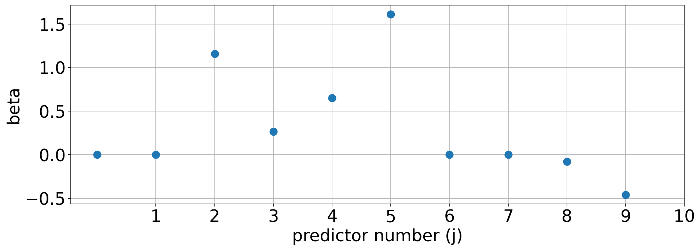
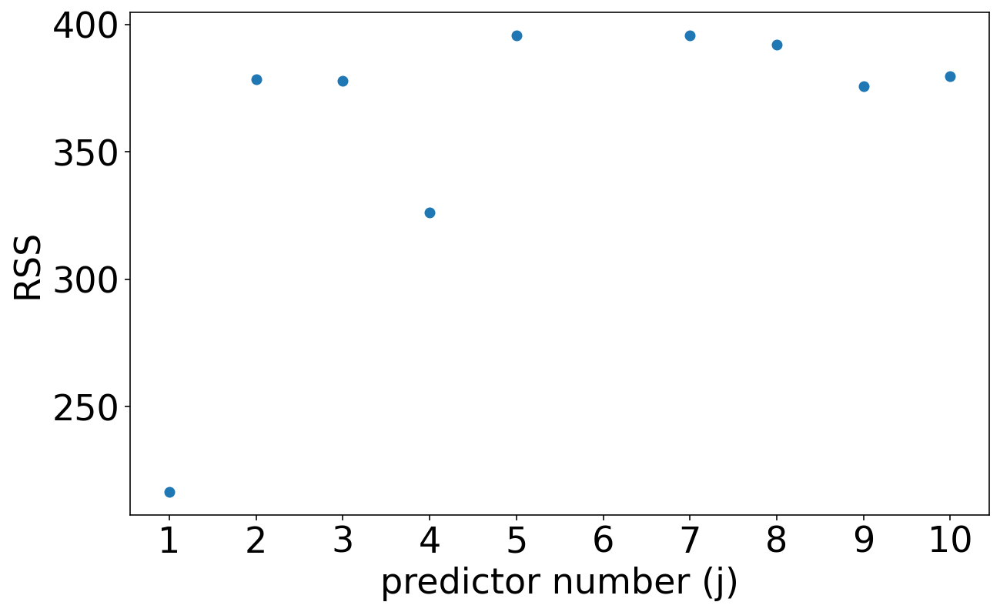

import numpy as np
import pandas as pd
from scipy import stats
import pandas as pd
import matplotlib.pyplot as plt
from sklearn.linear_model import LinearRegression
from sklearn.linear_model import Ridge
from sklearn.linear_model import Lasso
%matplotlib inline
%config InlineBackend.figure_format = 'retina'
plt.rcParams['figure.figsize'] = 16,8
params = {'legend.fontsize': 'x-large',
'figure.figsize': (15, 5),
'axes.labelsize': 'x-large',
'axes.titlesize':'x-large',
'xtick.labelsize':'x-large',
'ytick.labelsize':'x-large'}
plt.rcParams.update(params)
nsize=60;
Npreds=10;
labels=['Temperature','Inversion Strength','Surface Relative Humidity','Omega 500','Dew Point','CCNs','Wind Speed','Lapse Rate','Static Stability','Helicity']
#betas=np.asarray([1.6, 1.2, 1.1, 0.8, 0,
# 0.0, 0.0,0.0,0.0,0.00])
betas=np.asarray([0, 0, 1.1, 0.8, 1.2,
1.6, 0.0,0.0,0.0,0.00])
Z=np.ones([nsize,Npreds])
for j in np.arange(0,Npreds):
Z[:,j]=stats.norm.rvs(loc=0,scale=1,size=nsize)
sigma_e=2
e=stats.norm.rvs(0,sigma_e,nsize)
y=np.matmul(Z,betas)+e
df =pd.concat([pd.DataFrame(data=Z,index=None,columns=labels),pd.DataFrame(data=y,index=None,columns=['cld'])],axis=1)
df.to_csv('CCFs_2.csv')
df=pd.read_csv('CCFs.csv')
y=df['cld'].values
Z=df[labels].values
RSS=np.zeros(Npreds)
for j in range(Npreds):
train_set=np.arange(0,60)
X_train=Z[train_set,j]
y_train=y[train_set]
model=LinearRegression().fit(X_train.reshape(-1,1),y_train)
yhat_train=model.predict(X_train.reshape(-1,1))
RSS[j]=np.sum((y_train-yhat_train)**2)
rreg=Lasso(alpha=0.4)
train_set=np.arange(0,40)
X_train=Z[train_set,:]
model=rreg.fit(Z,y)
model.coef_
plt.plot(model.coef_*1.5,'o',markersize=10)
plt.xlabel('predictor number (j)')
plt.xticks(np.arange(1,11));
plt.ylabel('beta')
plt.grid()

rreg=Ridge(alpha=0)
model=rreg.fit(Z,y)
model.coef_
plt.plot(model.coef_,'o')
[<matplotlib.lines.Line2D at 0x7fb012e8deb0>]
fig,ax=plt.subplots(1,figsize=[10,6])
v=np.asarray([0,1,2,3,4,6,7,8,9])
plt.plot(v+1,RSS[v]-80,'o')
plt.xlabel('predictor number (j)')
plt.ylabel('RSS')
plt.xticks(np.arange(1,11));

train_set=np.arange(0,40)
valid_set=np.arange(20,40)
test_set =np.arange(40,60)
X=Z[:,0:5]
X_train=X[train_set,:]
y_train=y[train_set]
X_test=X[test_set,:]
y_test=y[test_set]
X_valid=X[valid_set,:]
y_valid=y[valid_set]
model=LinearRegression().fit(X_train,y_train)
yhat_train=model.predict(X_train)
yhat_test =model.predict(X_test)
yhat_valid=model.predict(X_valid)
mse_train=np.sum((yhat_train-y_train)**2)/len(y_train)
mse_test =np.sum((yhat_test -y_test )**2)/len(y_test)
mse_valid=np.sum((yhat_valid-y_valid)**2)/len(y_valid)
fig,ax=plt.subplots(1,figsize=[20,12])
K=[4,5,0,1,2,3,6,7,8,9]
for j in range(Npreds):
plt.plot(Z[0:100,K[j]]+5*j+10,label='$X_{'+str(j+1)+'}$: '+labels[K[j]]);
plt.xlabel('time')
plt.plot([0,60],[0,0],'k');
plt.xlabel('time')
plt.plot(y_train,'k',linewidth=4,label='Y= cloud cover')
#plt.plot(y[0:60]-e[0:60],'r',linewidth=4,label='Y= observed cloud cover')
plt.legend()
plt.xlim([0,120])
print(np.var(e)/np.var(y))
0.5778281125669958
fig,ax=plt.subplots(1,figsize=[12,8])
plt.plot(y,'k',linewidth=3)
plt.plot(train_set,yhat_train,'--',linewidth=2,label='training')
plt.plot(valid_set,yhat_valid,'--',linewidth=2,label='validation')
plt.plot(test_set,yhat_test,'--',linewidth=2,label='test')
plt.legend()
plt.xlim(-5,60)
plt.ylim(-7,12)
#plt.text(0,-6.5,'MSE train= '+np.array2string(mse_train[2],precision=2),fontsize=20)
#plt.text(20,-6.5,'MSE test= '+np.array2string(mse_test[2],precision=2),fontsize=20)
#plt.text(37,-6.5,'MSE validation= '+np.array2string(mse_valid[2],precision=2),fontsize=20)
(-7.0, 12.0)
mse_train=np.empty(Npreds)
mse_test =np.empty(Npreds)
mse_valid=np.empty(Npreds)
for m in np.arange(1,Npreds):
#sigma_e=2
#e=stats.norm.rvs(0,sigma_e,nsize)
#y=np.dot(Z,betas)+e
X=Z[:,0:m]
X_train=X[train_set,:]
y_train=y[train_set]
X_test=X[test_set,:]
y_test=y[test_set]
X_valid=X[valid_set,:]
y_valid=y[valid_set]
model=LinearRegression().fit(X_train,y_train)
yhat_train=model.predict(X_train)
yhat_test =model.predict(X_test)
yhat_valid=model.predict(X_valid)
mse_train[m]=np.sum((yhat_train-y_train)**2)/len(y_train)
mse_test [m]=np.sum((yhat_test -y_test )**2)/len(y_test)
mse_valid[m]=np.sum((yhat_valid-y_valid)**2)/len(y_valid)
print(np.shape(X_train))
(40, 1)
(40, 2)
(40, 3)
(40, 4)
(40, 5)
(40, 6)
(40, 7)
(40, 8)
(40, 9)
fig,ax=plt.subplots(1,figsize=[12,12])
plt.plot(mse_train[1:],'o-',label='training mse')
plt.plot(mse_valid[1:],'o-',label='validation mse')
plt.plot(mse_test[1:],'o-',label='test mse')
#plt.xlim(0,9)
plt.legend()
#plt.ylim(0,20)
<matplotlib.legend.Legend at 0x7fb010c19400>
## fig,ax=plt.subplots(1,figsize=[12,12])
plt.plot(mse_train,'o-',label='training mse')
plt.plot(mse_test,'o-',label='test mse')
plt.plot(mse_valid,'o-',label='validation mse ')
plt.xlim(1,9)
plt.legend()
plt.ylim(1,6)
(1.0, 6.0)
¶
from sklearn.model_selection import KFold
n_splits=5
mse_train=np.zeros([Npreds,n_splits])
mse_test=np.zeros([Npreds,n_splits])
mse_valid=np.zeros([Npreds,n_splits])
for m in np.arange(1,Npreds):
k=0
X=Z[:,0:m]
kf = KFold(n_splits=n_splits)
kf.get_n_splits(X)
for train_index, test_index in kf.split(X):
#print("TRAIN:", train_index, "TEST:", test_index)
X_train, X_test = X[train_index], X[test_index]
y_train, y_test = y[train_index], y[test_index]
model=LinearRegression().fit(X_train,y_train)
yhat_train=model.predict(X_train)
yhat_test =model.predict(X_test)
mse_train[m,k]=np.sum((yhat_train-y_train)**2)/len(y_train)
mse_test [m,k]=np.sum((yhat_test -y_test )**2)/len(y_test)
k=k+1
from sklearn.model_selection import KFold
n_splits=5
mse_train=np.zeros([Npreds,n_splits])
mse_test=np.zeros([Npreds,n_splits])
mse_valid=np.zeros([Npreds,n_splits])
alpha=np.linspace(0,0.3,Npreds)
for m in np.arange(1,Npreds):
k=0
X=Z
kf = KFold(n_splits=n_splits)
kf.get_n_splits(X)
for train_index, test_index in kf.split(X):
#print("TRAIN:", train_index, "TEST:", test_index)
X_train, X_test = X[train_index], X[test_index]
y_train, y_test = y[train_index], y[test_index]
print(alpha[m])
rreg=Lasso(alpha=alpha[m])
model=rreg.fit(X_train,y_train)
yhat_train=model.predict(X_train)
yhat_test =model.predict(X_test)
mse_train[m,k]=np.sum((yhat_train-y_train)**2)/len(y_train)
mse_test [m,k]=np.sum((yhat_test -y_test )**2)/len(y_test)
k=k+1
0.03333333333333333
0.03333333333333333
0.03333333333333333
0.03333333333333333
0.03333333333333333
0.06666666666666667
0.06666666666666667
0.06666666666666667
0.06666666666666667
0.06666666666666667
0.1
0.1
0.1
0.1
0.1
0.13333333333333333
0.13333333333333333
0.13333333333333333
0.13333333333333333
0.13333333333333333
0.16666666666666666
0.16666666666666666
0.16666666666666666
0.16666666666666666
0.16666666666666666
0.2
0.2
0.2
0.2
0.2
0.23333333333333334
0.23333333333333334
0.23333333333333334
0.23333333333333334
0.23333333333333334
0.26666666666666666
0.26666666666666666
0.26666666666666666
0.26666666666666666
0.26666666666666666
0.3
0.3
0.3
0.3
0.3
fig,ax=plt.subplots(1,figsize=[12,12])
#plt.plot(np.arange(1,10),np.mean(mse_train[1:],1),'o--',label='training mse')
plt.plot(alpha[1:],np.mean(mse_test[1:],1),'o-',label='validation mse')
#plt.plot(mse_test[1:],'o-',label='validation mse')
plt.ylabel('mse')
plt.xlabel('$\lambda$')
#plt.xlim(0,9)
plt.legend()
#plt.ylim(0,20)
<matplotlib.legend.Legend at 0x7fb0002639a0>
model=LinearRegression().fit(X_train,y_train)¶
yhat_train=model.predict(X_train)
yhat_test =model.predict(X_test)
yhat_valid=model.predict(X_valid)
mse_train[m]=np.sum((yhat_train-y_train)**2)/len(y_train)
mse_test [m]=np.sum((yhat_test -y_test )**2)/len(y_test)
mse_valid[m]=np.sum((yhat_valid-y_valid)**2)/len(y_valid)
ridge
---------------------------------------------------------------------------
NameError Traceback (most recent call last)
/var/folders/pr/3_264g5j1d15jdsjfgsqbdj80000gp/T/ipykernel_43281/314734280.py in <module>
----> 1 ridge
NameError: name 'ridge' is not defined
np.shape(X_train)
(48, 10)